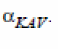
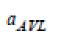
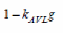

HiCUM Model Version 2.40
Following updates have been made in Version 2.40:
-
New CMC model versioning policy is adopted:
<version #>.<subversion #>.<revision#> - Improvised collector avalanche equation
- Backward compatibility and application
- Introduction of conditional statement for weak avalanche breakdown
-
Addition of
Gminfor operating point values -
Renamed the operating point value names of resistance,
REandRCXbyre_tandrcx_t -
Improvised calculation of
Vciei
Improvised Strong Collector Avalanche Formula
The new formulation for strong collector avalanche breakdown is given by:
Formula based on weak avalanche:
With addition parameter 
, kAVL is modeled temperature dependent by:
With the smoothening model parameter  fixed to 0.01, the denominator  is limited to values greater than zero by the smoothening function:
Parameter Extraction
Conditional Statement for Weak Avalanche
Improvised conditional statement based on based on favl and cjci0 and not favl_t and cjci0_t:
if ((favl > 0.0) && (cjci0 > 0.0)) begin
use_aval = 1;
end else begin
use_aval = 0;
iavl = 0.0;
end
Usage of an integer flag results in faster evaluation of the if-statement:
if(use_aval == 1) begin : HICAVL
Setting iavl = 0.0 during model initialization avoids the additional else block for this if-statement.
Backward Compatibility and Application
- Extension is completely compatible to previous HICUM versions.
-
Values for weak avalanche model parameters
fAVLandqAVLcan be re-used to extend existing model cards by the new feature. - Application of experimental data:
Improvised Vciei Calculation
For model compilers with derivatives based on branches, variables for the high-current region dependent on four branches, bi,ei, bi,ci, ci,ei, and t,gnd, Vciei will be calculated as:
Vciei = Vbiei-Vbici
This calculation removes the dependence on the ci,ei branch and reduces number of derivatives for each variable to three.
Return to top